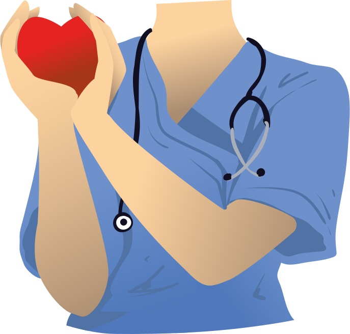

TÓPICO 2
O PROCESSO DE TRABALHO E SAÚDE-DOENÇA DOS TRABALHADORES DA APS
TÓPICO 2
O PROCESSO DE TRABALHO E SAÚDE-DOENÇA DOS TRABALHADORES DA APS
Para explicar esses conceitos, vamos nos basear em três objetivos:
1. Compreender o adoecimento dos trabalhadores da APS.
2. Intervir para prevenir ou minimizar o adoecimento e o afastamentos desses trabalhadores.
3. Promover a saúde dos trabalhadores da APS.
Esses objetivos são amplos e precisam de investimento em estudo e tempo. Entretanto, traremos elementos fundamentais que lhe ajudarão a conceber uma visão voltada para a gestão da saúde e articulada a um pensamento sanitarista.
